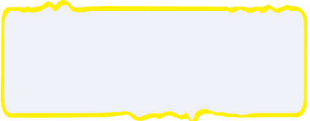

Ayo Ceritakan
Activity

Sekarang coba tuliskan peralatan yang digunakan oleh orang tuamu pada masa lalu dan masa sekarang untuk
membantu pekerjaan mereka!
Tulis juga pengaruh dari perkembangan teknologi itu! Ceritakan hasilnya kepada teman sebelahmu.
